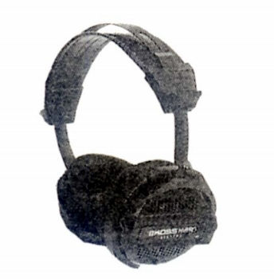

HV/PRO

■価格 14,000円■型式 ダイナミック型オープンエアタイプ■振動板 ■インピーダンス 100Ω■再生周波数帯域 15-35,000Hz■許容入力 100mW■感度 80ｄB/mW■コード 2.5m■重量 235g■発売 1992年2月■販売終了 1996〜97年頃■備考 Ｌ/Ｒ独立リモートボリューム装備マグネットは異方性フェライトイヤパッドは密度勾配型イヤクッション
コスのインデックスへ